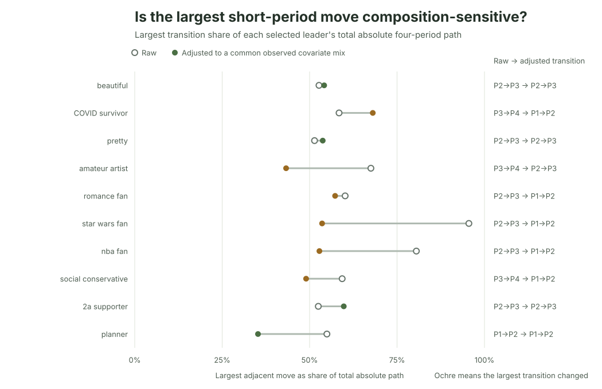

Ipseity Daily Pulse · 2026-09-25
The lurch persists, but its timing often changes
Adjustment preserves average path concentration but often changes when the largest move appears.
By Ceetown · 3 minute read
Does a jagged identity trend become smooth after accounting for who answered and when? Not in this selected set—but the apparent timing often changes.
For the 20 most extreme Ipseity Daily linear-trend estimates, the largest of three adjacent period changes contained a median 58% of the raw path. After standardizing each signifier to the same observed age, sample-composition, weekday, and month mix, that median was still 54%. Yet only eight of the 20 kept the same largest transition.
The useful lesson is not that any particular identity changed in one decisive moment. It is that a linear trend can conceal an uneven path, while adjustment can alter our account of when the biggest move occurred.
Source: Ipseity Daily download page

Evidence note
The values use canonical microdata through 2026-09-24, retrieved at 2026-09-25T10:07:47Z. Four periods span 2025-07-08–2025-10-26, 2025-10-27–2026-02-14, 2026-02-15–2026-06-05, and 2026-06-06–2026-09-24. The adjusted path comes from an additive linear probability model with period indicators, linear age, missing age, recorded composition, weekday, and month terms; estimates standardize non-period terms to their full-sample means.
This is a descriptive sensitivity for signifiers selected from the
ten most positive and ten most negative of 704 eligible linear trends.
It is not an inferential or discovery test and does not correct repeated
respondents, unobserved composition, nonrepresentative recruitment, or
selection of extremes. Linear-probability standardized estimates can
fall outside 0%–100%; one displayed estimate does, underscoring model
sensitivity. No primary trend passed the 5% Benjamini–Hochberg or
Bonferroni screen. Full estimates and limitations are in CURRENT-FINDINGS.md and outputs/leader-period-trajectory.csv.
Snapshot note: This dated entry and figure are preserved from the stated check. Links to the cumulative report and aggregate tables may show newer data.